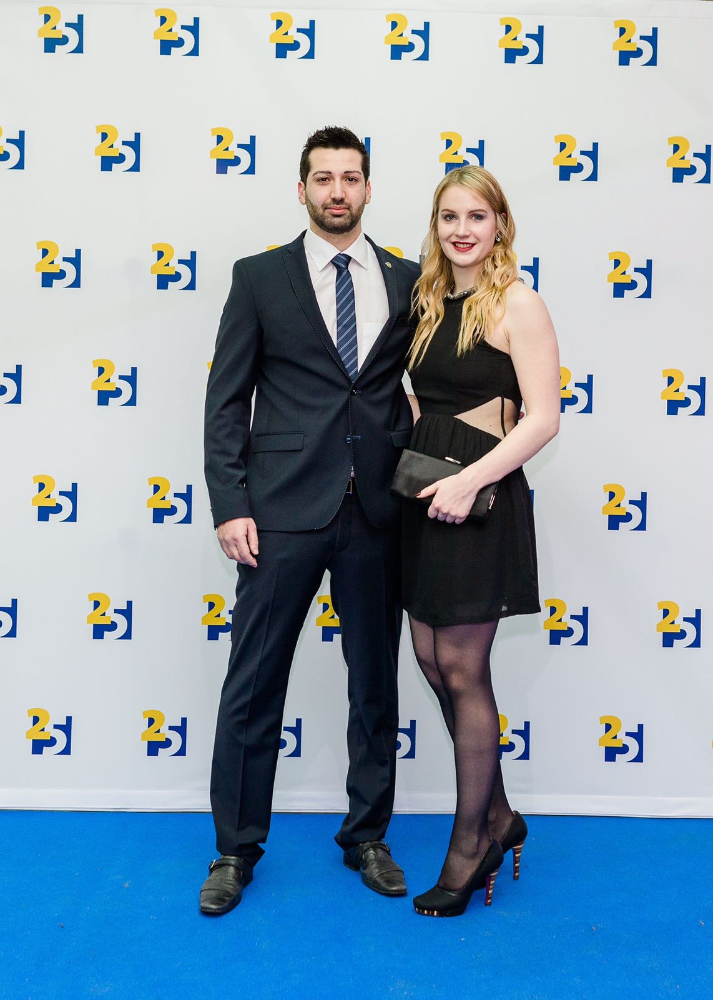
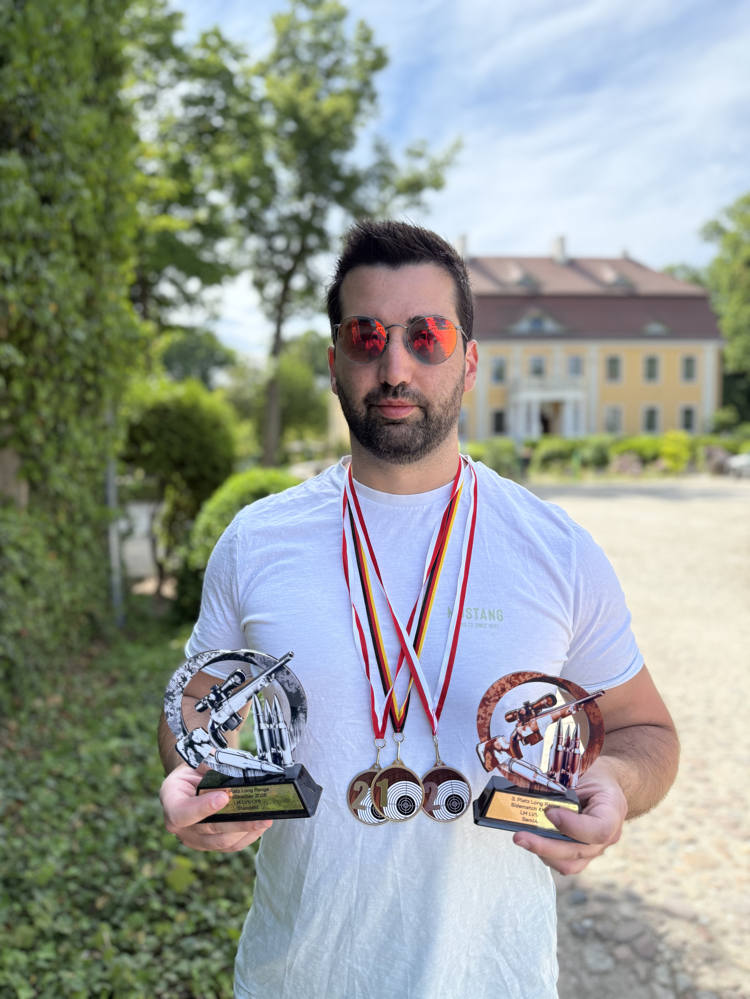

Konzentration, Ruhe und saubere Abläufe.
THORNS ON TARGET
Über uns
Präzision • Erfahrung • Leidenschaft
Training ist mehr als Wiederholung. Es ist das Verstehen jedes Details: Stand, Griff, Atmung, Abzug, Fokus und ehrliche Auswertung.

Über uns
Präzision entsteht nicht durch Zufall - sondern durch Wissen, Training und Erfahrung.
THORNS ON TARGET steht für modernes Schießtraining auf höchstem Niveau. Mit nationaler und internationaler Wettkampferfahrung vermitteln wir praxisnahes Wissen rund um Präzisionsschießen, Long Range und den sicheren Umgang mit der Waffe.
Unser Weg war dabei nicht immer der einfachste. Oft wurde behauptet, Spitzenleistungen seien nur mit extrem teurer Ausrüstung oder aufwendig selbstgeladener Munition möglich. Wir haben das Gegenteil bewiesen.
Unsere Philosophie ist klar: Erfolg entsteht durch Technik, Verständnis und konsequentes Training - nicht allein durch den Preis der Ausrüstung. Deshalb zeigen wir unseren Teilnehmern, wie sie auch mit hochwertiger Fabrikmunition und sinnvoll ausgewähltem Equipment hervorragende Ergebnisse erzielen können.
Jeder Schütze ist anders. Deshalb legen wir Wert auf eine individuelle Betreuung, verständliche Erklärungen und Trainingskonzepte, die sich an den persönlichen Zielen orientieren - vom ambitionierten Einsteiger bis zum erfahrenen Wettkampfschützen.
Unser Ziel ist es, Wissen weiterzugeben, Fähigkeiten nachhaltig zu verbessern und die Freude am Schießsport mit jeder Trainingseinheit wachsen zu lassen.
Fokus & Wettkampfgeist
Jacqueline
Jacqueline bringt Konzentration, Ehrgeiz und einen klaren Blick für Details in THORNS ON TARGET ein. Ihr Anspruch an sauberes Training und kontrollierte Abläufe macht sie zu einem starken Teil dieses Projekts.
Gerade im sportlichen Schießen zeigt sich, wie wichtig mentale Ruhe, Vorbereitung und Wiederholbarkeit sind. Diese Haltung prägt ihren Blick auf Training, Wettkampf und Weiterentwicklung.
Strukturiertes Arbeiten statt zufälliger Treffer.
Erfahrung unter Druck und mit klarer Zielsetzung.
Präzision & Erfahrung
ASAT
ASAT steht für Erfahrung, Ruhe und konsequente Präzision. Im Training geht es nicht darum, möglichst viel zu schießen, sondern zu verstehen, warum ein Treffer entsteht - und warum er manchmal ausbleibt.
Sein Ansatz ist direkt, praxisnah und verständlich. Technik, Sicherheit, Auswertung und mentale Kontrolle werden nicht getrennt betrachtet, sondern als Ganzes.
Saubere Grundlagen und klare Wiederholbarkeit.
Trefferbilder verstehen und sinnvoll korrigieren.
Wissen so vermitteln, dass es auf dem Stand funktioniert.

Philosophie
Training mit Haltung.
THORNS ON TARGET soll hochwertig wirken, aber nie künstlich. Der Kern bleibt: Sicherheit, Präzision, Verständnis und echte Entwicklung.
Präzision
Treffer entstehen durch saubere Abläufe, Kontrolle und Wiederholbarkeit.
Sicherheit
Professionelles Training beginnt immer mit verantwortungsbewusstem Umgang.
Training
Gutes Training erklärt nicht nur was passiert, sondern warum es passiert.
Erfolg
Fortschritt entsteht, wenn Erfahrung, Analyse und Disziplin zusammenkommen.
Bildbereiche
Vorbereitet für echte Fotos.
Diese Bereiche sind bereits fest eingeplant. Die Bilder können später bearbeitet und an genau diesen Stellen eingesetzt werden.
Kontakt
Bereit für den nächsten Schritt?
Wer mehr über Training, Kurse oder eine mögliche Zusammenarbeit erfahren möchte, kann direkt Kontakt aufnehmen.
Kontakt aufnehmen